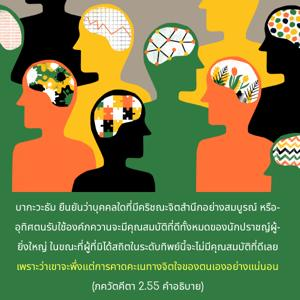

บุคลิกภาพสูงสุดแห่งพระเจ้าตรัสว่า โอ้ ปารฺถ เมื่อบุคคลยกเลิกความปรารถนานานับปการเพื่อสนองประสาทสัมผัส ซึ่งเกิดขึ้นจากการคาดคะเนของจิต และเมื่อจิตบริสุทธิ์ขึ้นเขาจะพบแต่ความพึงพอใจในตนเองเท่านั้น กล่าวไว้ว่าบุคคลผู้นี้มีจิตสำนึกทิพย์ที่บริสุทธิ์

ภาควต ยืนยันว่าบุคคลใดที่มีกฺฤษฺณจิตสำนึกอย่างสมบูรณ์ หรือมีการอุทิศตนรับใช้องค์ภควานฺจะมีคุณสมบัติที่ดีทั้งหมดของนักปราชญ์ผู้ยิ่งใหญ่ ในขณะที่ผู้ที่ไม่ได้สถิตในระดับทิพย์นี้จะไม่มีคุณสมบัติที่ดีเลยอย่างแน่นอน เพราะว่าเขาจะพึ่งแต่การคาดคะเนทางจิตใจของตนเอง ดังนั้นจึงกล่าวได้อย่างถูกต้อง ณ ที่นี้ว่าเราต้องยกเลิกความต้องการทางประสาทสัมผัสทั้งหมดซึ่งเกิดขึ้นจากการคาดคะเนของจิตใจ ความต้องการทางประสาทสัมผัสนี้ไม่สามารถหยุดอย่างผิดธรรมชาติได้ แต่ทันทีที่เราเริ่มปฏิบัติในกฺฤษฺณจิตสำนึกความต้องการทางประสาทสัมผัสจะลดลงโดยปริยายโดยไม่ต้องพยายามเป็นพิเศษ ฉะนั้นเราจะต้องปฏิบัติตนในกฺฤษฺณจิตสำนึกโดยไม่ลังเล เพราะการอุทิศตนเสียสละรับใช้นี้จะช่วยนำเราไปสู่ระดับจิตสำนึกทิพย์ทันที จิตวิญญาณที่พัฒนาสูงแล้วจะมีความพึงพอใจในตนเองเสมอด้วยจิตสำนึกที่ว่าตนเองเป็นผู้รับใช้ขององค์ภควานฺ บุคคลผู้สถิตในระดับทิพย์เช่นนี้จะไม่มีความต้องการทางประสาทสัมผัสอันเนื่องมาจากลัทธิวัตถุนิยมที่ไม่สำคัญ แต่เขาจะมีความสุขอยู่เสมอในสภาวะธรรมชาติแห่งการรับใช้องค์ภควานฺนิรันดร